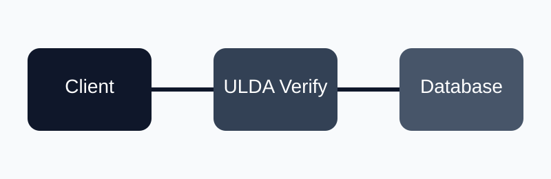

Короткий опис роботи
ULDA Notes — це вебзастосунок для приватних нотаток, у якому право на зміну запису перевіряється локально через ULDA-підписи без серверного стану, а вміст зберігається у зашифрованому вигляді.
Про проєкт
ULDA Notes є прикладним вебсервісом приватних заміток, у якому доступ до зміни записів підтверджується не класичною серверною сесією, а кроком у лінійній послідовності підписів. Такий підхід дозволяє перевіряти право на дію локально, без глобальних таблиць стану та довгоживучих секретів на сервері.

Ключові слова
ULDA Notes, лінійна авторизація, stateless authorization, приватні нотатки, Node.js, MySQL, AES-256-GCM, ULDA-S, ULDA-X.
Актуальність теми
У сучасних вебсистемах важливими є конфіденційність користувацьких даних, безпечний доступ до ресурсів та зменшення залежності від централізованого серверного стану. Для сервісу приватних нотаток це особливо критично, оскільки компрометація бази або сесійної логіки може призвести до витоку чутливого контенту.
Мета дослідження
Розробити та представити модель вебзастосунку для приватних нотаток, у якій право на зміну ресурсу підтверджується локально без використання серверних сесій, а конфіденційність даних забезпечується криптографічним захистом.
Основні завдання
- Дослідити можливість використання ULDA-підписів для локальної перевірки права на дію.
- Реалізувати модель зберігання приватних нотаток із шифруванням вмісту.
- Побудувати структуру взаємодії клієнта, сервера та бази даних.
- Порівняти режими ULDA-S та ULDA-X для практичного застосування.
- Визначити напрямки подальшого розвитку системи, зокрема клієнтське E2E-шифрування.
Методологія дослідження
У роботі використано модель лінійної авторизації ULDA-S як базовий режим з економним трафіком і підтримкою локальної перевірки сусідніх кроків. Режим ULDA-X розглядається як опція для сценаріїв із жорсткішою локальною узгодженістю. Для захисту контенту нотаток застосовується схема scrypt → HKDF → AES-256-GCM, а дані організовані в архітектурі Node.js + MySQL.
Очікувані результати
Очікуваним результатом є створення прототипу вебсервісу, який демонструє можливість відмови від класичних серверних сесій на користь stateless-перевірки прав доступу та одночасно забезпечує конфіденційність нотаток через повне шифрування контенту.